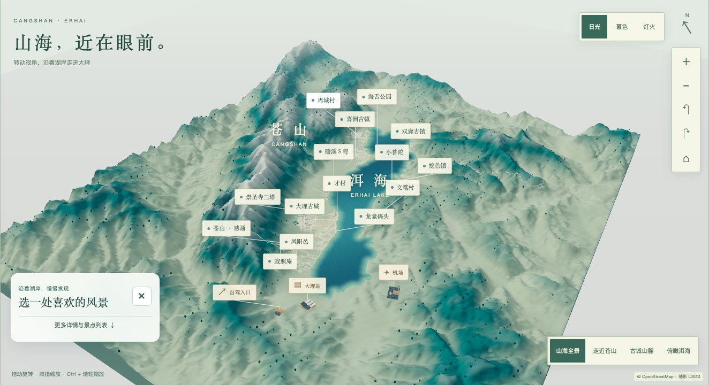
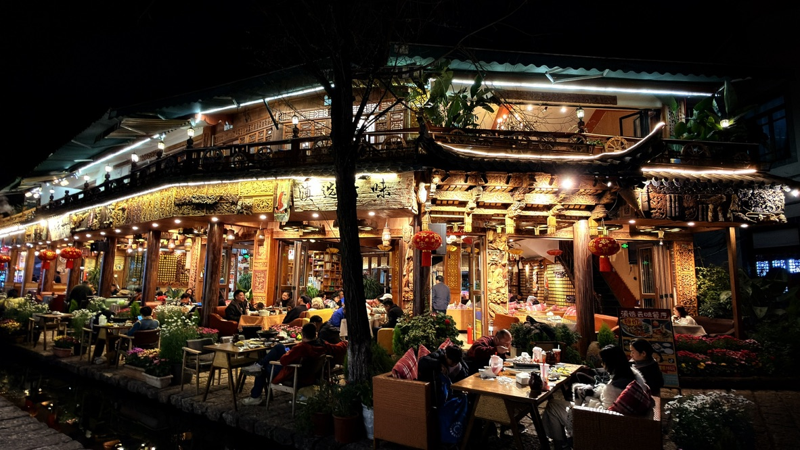
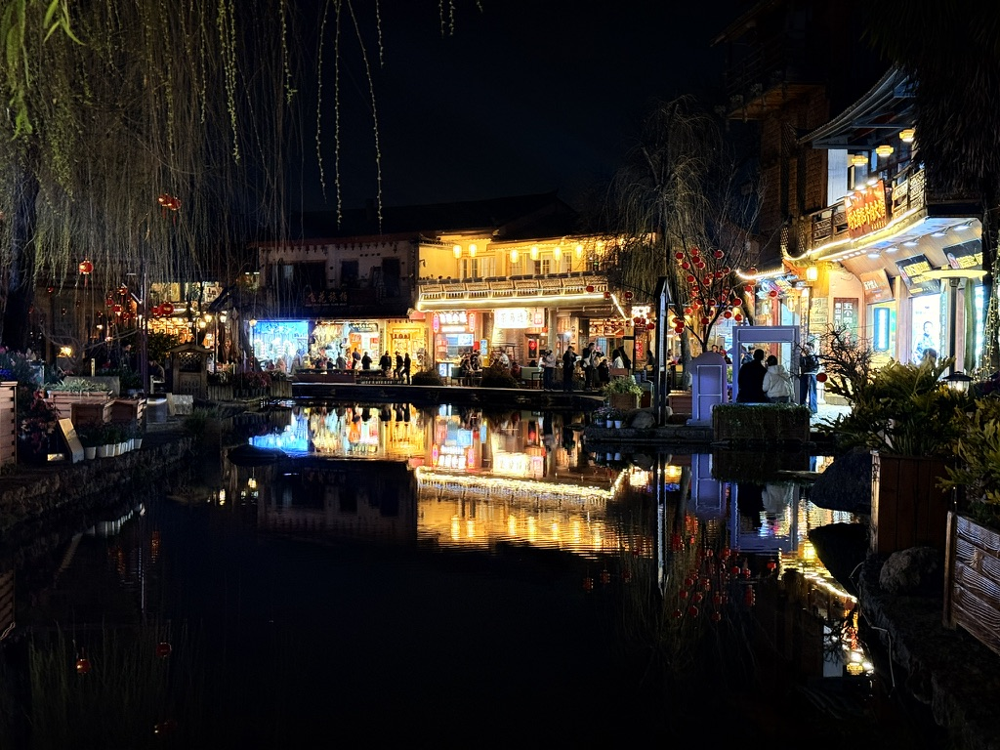
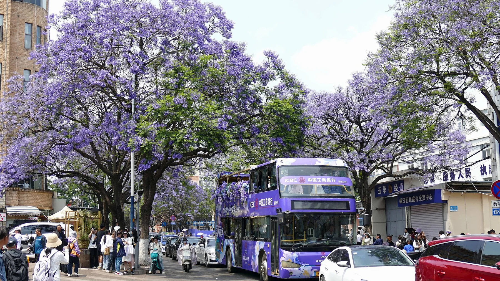
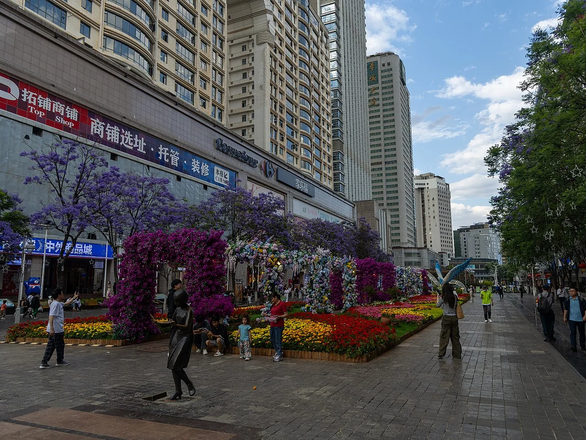

云南山水间
沿着地名，走进山水与日常。
沿着洱海走
苍山在西，村落沿湖。先选一处想停留的岸边。

山海预览 · 立体画面正在准备进入洱海后开始加载
地形 Mapzen / USGS · 湖岸与街区 © OpenStreetMap · 连线为游览顺序
把洱海的光，留在镜头里。
洱海 · 站长实拍
3 张原片 · 点击查看完整照片。
摄影：站长实拍 · 摄影者保留版权 · 地点：洱海
先走一段，再决定去哪里。
跟着镜头预览山海，把喜欢的风景留在自己的行程里。
停留时长为规划参考，不含交通、用餐与排队。开放、预约及交通安排请在出发前确认。
沿着洱海，看见风景
一针一线，
留下蓝与白。
在苍山脚下的周城，把一块白布扎紧、染蓝，再拆开线结，纹样才慢慢显露。蓝与白之间，藏着白族手艺人的日常。
白族扎染技艺于2006年列入第一批国家级非物质文化遗产名录。工坊体验的时长与收费请向店家确认。


束河入夜
过牌坊，沿着晚饭的灯火，走到水边。
古镇、雪山与远方的湖
一纸山水，慢慢丽江。
循着屋檐与山色，点一处想去的风景。
远方的湖，另留一页慢慢看。
有约
雪山与三座古镇
八处风景，藏在山水与日常里。
泸沽湖
在丽江城区东北方向，留一段完整旅程。
湖区放大图 · 与主图不同比例
程海
在丽江城区东南方向，去看开阔的湖面。
湖区放大图 · 与主图不同比例
喜欢哪里，就停在哪里。
10 处风景 · 实拍、AI演绎与地方故事
山水之外，
还有生活。
水流穿过街巷，木屋顺着山势排开。丽江古城的空间里，纳西文化与多种建筑传统相遇；白沙的壁画、束河的街巷，则把不同的地方记忆留了下来。走近一座古镇，也是在走近当地人的日常。
丽江影像与资料来源
昆明 · 城市生活
昆明
在春城，过一天。
从花树下的早班车，到老街边的咖啡店，再到人来人往的车站。

教场中路 · 赏花参考 4—5 月 ↗街区、商圈与抵达
从老街到南屏街

从老街的木门和坡屋顶走出来，南屏街的步行人流接上了顺城购物中心的影院、商店和餐桌。想歇一歇，可以把老街和商圈排在同一段散步里。
去看看茶与咖啡 ↗ · 街区资料 ↗从哪里抵达昆明？
昆明站
车票写「昆明」，抵达的是主城南侧的昆明站。想先逛昆明老街、南屏街，可以从这一带安排进城后的第一段。
点选站名查看方位 · 地形示意 湖岸 © OpenStreetMap · 地形 Mapzen / USGS
看昆明南站站台上的「澜沧号」
沿滇池读昆明
点选地名，查看影像与详情
湖岸 © OpenStreetMap · 地形 Mapzen
位置示意，出行请用导航